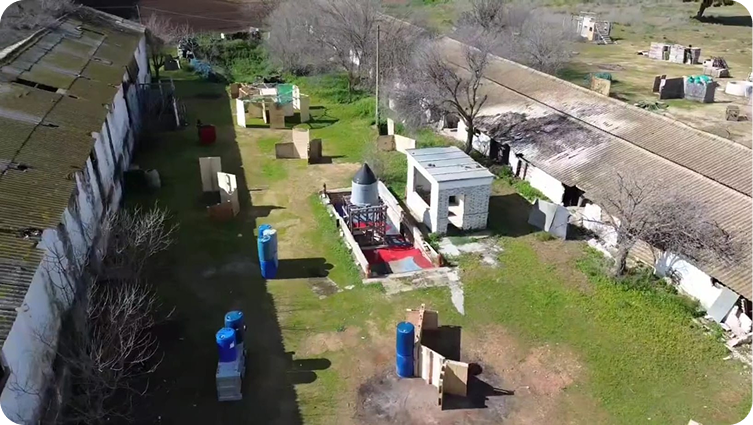

Destinos en Sevilla para Jugar Airsoft en Sevilla.
La cantera

Lora de Estepa
AIRSOFT EN LA ANTIGUA CANTERA DE LORA DE ESTEPA.
AIRSOFT EN LA ANTIGUA CANTERA DE LORA DE ESTEPA. Sumérgete en un campo de batalla épico, con altas paredes de roca, túneles semienterrados y ruinas estratégicas. Coberturas naturales, posiciones elevadas y zonas de emboscada crean un escenario perfecto para el combate táctico. Aquí, la estrategia y el trabajo en equipo son clave. Aprovecha el terreno, flanquea al enemigo y domina la cantera. ¿Estás listo para la acción? ¡Demuestra tu habilidad en este desafiante terreno de juego!
Area 96
Alcala de Guadaíra
AREA 96: EL DESAFIO CQB DEFINITIVO
Este campo ofrece combate a corta distancia en un entorno realista, con una nave industrial y antiguas cocheras llenas de rincones estratégicos. Pasillos estrechos, coberturas ajustadas y acción frenética requieren reflejos rápidos y estrategia. Cada esquina es un peligro, cada movimiento cuenta. No hay margen para el error: velocidad, comunicación y precisión son clave. ¿Estás listo para dominar Área 96?
Warcamp
Mairena del Aljarafe
WARCAMP EL OLIVAR DE COMBATE EN MAIRENA DEL ALJARAFE
Adéntrate en Warcamp, un extenso olivar donde la vegetación densa y el terreno irregular crean un desafío táctico único. Senderos ocultos, cobertura natural y estructuras estratégicas hacen de cada partida una experiencia intensa. Emboscadas y combate dinámico Las construcciones dispersas ofrecen puntos clave de defensa y ataque, obligando a los jugadores a adaptarse y coordinarse. Sigilo, estrategia y acción frenética en un escenario inigualable. ¿Te atreves a dominar Warcamp?